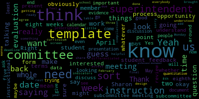
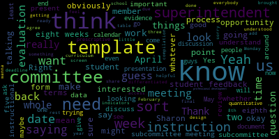

total time: 13.13 minutes
total words: 1771

total time: 22.85 minutes
total words: 3380
{kind=link}
total time: 7.0 minutes
total words: 1148

total time: 16.18 minutes
total words: 3025

[Edouard-Vincent]: But because of the break, we're just trying to get ahead of it right away. Thank you.
[Unidentified]: The good news is it's done. I just haven't had a minute to get started. Fabulous.
[Hays]: All right, well, it's 5.02, and maybe in the interest of time, I will just go ahead and start. Then we'll start. I will go ahead and read the meeting notice, and we can continue to let people in if people show up. Please be advised that on Thursday, February 16th, 2023, from 5 p.m. to 6 p.m., there will be an evaluation subcommittee meeting held through remote participation via Zoom. The meeting can be viewed through Medford Community Media on Comcast Channel 15 and Verizon Channel 45 at 5 p.m. Since the meeting will be held remotely, participants can log in or call in by using the following link or call-in number. And the number, one of the numbers anyway you can use is 309-309-205 and enter the meeting ID number 954-1274-6142. Additionally, questions or comments can be submitted during the meeting by emailing shays at medford.k12.ma.us. Those submitting must include the following information. your first and last name, your Medford street address, and your question or comment. As approved by the committee on February 1st, 2023, the evaluation subcommittee will meet to review and develop the process for the 2022-23 superintendent evaluation. The agenda is as follows. One, Develop a timeline for the 2022-23 superintendent evaluation process, including due dates for all parties involved and a tentative schedule of subcommittee meetings. Two, develop a process for the 2022-23 superintendent evaluation, including the timeline, templates, and instructions for school committee members. And three, Discuss the types of evidence the superintendent will provide to document progress on the year's goals and selected indicators. And, oh, I just realized, are we missing a member? I don't see Melanie McLaughlin on yet.
[Graham]: Do you want me to, let me message her and see.
[Unidentified]: Okay. I just got a message. She just sent me a message. I'm going to resend her the link. OK. All right, we'll wait a minute for her, and we'll call the roll.
[Graham]: She said she may have to hop off to take an important call, but she was going to hop on shortly. So I don't know if we just want to get started and we can bring her into the attendance when she arrives. Sure. I wasn't sure.
[Hays]: Two out of three of us, we can do the meeting? OK. Okay, so I will call the roll then. Member Graham? Here. Member McLaughlin? Oh, there she is. Member McLaughlin, hi. Calling the roll. Member McLaughlin?
[Unidentified]: She's here. Oh, she just needs a minute. And then you have to call yourself as part of the roll.
[Hays]: Yes. Okay, so. Member Glaufen is present, just connecting. And Member Hays, present. Present, thank you. I couldn't get to the unmute button. Thank you. No problem. So let's see. So just to give a brief introduction as to why we're here for anyone who watches this who might not have seen our last meeting. We, the school committee had a retreat with Dorothy Presser from the Massachusetts Association of School Committees, who has also worked extensively with Jesse on the superintendent evaluation process. And through that retreat, she gave us a training, just an update on the superintendent evaluation process. And through that meeting, we realized there were a few updates we could make to our process to align it more closely with Desi's guidelines. So we had a committee of the whole meeting on February 1st, where we discussed some of the updates we wanted to make. And then at the regular school committee meeting on February 6th, the school committee approved some of those changes that we or or approved some of the updates. And one part of that was also approval for a new subcommittee to be called the Superintendent Evaluation Subcommittee. And this is our first meeting. So I don't know how far to go in the background. Some of the things that have already been approved that were approved on February 6th, included this year, rather than using a number rating system, we would use the word-based rating system that is in the DESE guidelines. We'd be using, really following that very closely, using their wording for rating the superintendent, those words like exemplary, proficient, needs improvement, and unsatisfactory. that we would, the subcommittee would be responsible for compiling, creating the process for the evaluation this year and also compiling all of the individual evaluations and creating the composite evaluations that we would then submit to the school, the full school committee for approval. We agreed that the superintendent's evaluation would include the raw data from all the members in addition to the composite evaluation of the subcommittee. And we also approved nine indicators that we would use from the superintendent evaluation rubric. This year, we chose nine indicators that would most closely align with the superintendent's goals. So for this first meeting, I thought, and obviously members can chime in and let me know what they think, maybe we should start with the actual timeline, kind of work backward from the date where we want to have the final meeting of where we approve the composite evaluation, and then kind of work backward from there, and that would determine then also we could look at what meetings the subcommittee needs to have based on that timeline.
[Unidentified]: Any thoughts?
[McLaughlin]: That sounds good to me. So are you going to like sort of share like a doc to look at the timeline and then just sort of work together to identify dates backward or what the milestones are for moving the dates backward?
[Hays]: So I don't actually have anything to share, but I can talk about that. I mean, I did make myself a a personal agenda for this meeting. So I can say, you know, what I have down is that we would need to start really with the final date, right? That final composite evaluation date, sometime probably late in June. And then working backward from there would be the dates, let's see, the dates by which the members would need to return their individual evaluations. And then before that would be the date by which we would provide those, the templates for those evaluations to the members. And prior to that would be the date of the, I think last year it was a committee of the whole meeting, um, where the superintendent prevent, uh, presented herself evaluation to us.
[Graham]: So our two scheduled meetings in June are, um, June 5th and June 12th. Yes. Um, and the other thing that we need to add to the timeline is that we would need to vote in a, um, regularly scheduled school committee meeting to accept like anything that comes out of a committee of the whole. So, um, the committee of the whole would have to happen or we would need to call a special school committee meeting late in the month to simply adopt what comes out of the committee of the whole. So, um, I think it would be ideal if the committee of the whole could occur before the 12th, because then we could not be trying to sort of shove another meeting into the calendar in June, given all that goes on in June. But I think that does present some questions about the timeline and when it's reasonable to start this process. Because if you back up from there, like we're probably, starting to work at the beginning of May for the superintendent to be saying to us, like, this is what I've accomplished this year. And I starting at the beginning of May is pretty early.
[McLaughlin]: So can I just get some clarification? Sharon? Yes. So, um, essentially what I think I heard a member Graham saying is that committee of the whole to discuss. The data that we're all coming back to the table with, uh, not a committee of the whole to approve the template. Right. Correct. Okay. Just wanted to clarify. So I think that, thank you. So I think that, um, You know, we have to report out from this committee. So I think that if we could have a date that we're getting the template out, that we know that that's coming in a date that we know that it's due. And, you know, then we can have obviously a better idea when the superintendent is available to, to speak to, you know, what she needs to speak to, but we're already February 16th, which is making me feel like, ah, right. Because we need time to also do the evaluation when we need time to create the template.
[Hays]: Well, I don't know if we need to, well, I think that's a separate issue of what template. There are some templates we could just, there is a DESI template, but that was later on the agenda. But I think that we need to know when the final, I think we need to start with when we know the final is gonna be and work backwards, because we could choose a date on, if we'd start with choosing a date when we're going to hand out the template, then we move forward and find that doesn't work because we don't have enough time to complete the whole thing before we have a meeting. I feel like we need to, I think working backwards seems to make more sense. If we know when we're gonna have that final meeting, then we start talking backwards about how long we need to, because we are gonna need some time to create that composite. And then that would work backwards from there. So if we get a sense of when the final meeting would be, Do we have, is there any reason why we can't have another, I know we have two regularly scheduled meetings already set. Is there, I don't know if there's a rule that says we can't have another meeting, if we, because if we start pushing it back to May, then we're, I don't know, it feels like we're cutting off a couple of months, but maybe that's, I've only done one before, so maybe that's the way it's always kind of worked.
[Graham]: We can have another meeting. Um, the problem with that is there's going to be other reasons to have other meetings in June around the budget and like graduation and all the other things superintendent, if you want to play.
[Edouard-Vincent]: Yeah, okay. Thank you. I was going away and you were reading my mind. Because the first normally it's the first Wednesday of the month is high school graduation, which would be June 7 Wednesday the seventh times the rain date would be that Thursday. So, with our two meetings being Monday, June 5. graduation is the 7th, and our next meeting being June 12th. And we know what happens as we get to June around the budget season. I, you know, I would propose If it's going to be a committee of the whole for that committee of the whole to take place that last week of, of, I mean, it could be June 1, Thursday, the first or something like that to do. I don't know if that's enough time though, if you'd want me to present on Thursday, June 1st, or do you wanna bring it back at least one more week? Because school right now, I believe it's scheduled to close on June 16th for students. And so we would be focusing primarily on any last minute budget things, which budget meetings do end up taking time. I'm thinking with the idea of mapping, working backwards and mapping it out. To Member Graham's point, because the 12th is our last official regular scheduled meeting, we may end up having other special meetings or whatever the case may be. It really should be prior to June 5th. even if it was the, and I don't know how much time you as the committee membership think you need to complete the tool. So if you're thinking, if we want to announce it at the June 5th meeting or the June 12th at the latest, If it's announced at the June 12th meeting, what was discussed at the committee of the whole for that to be approved, that is bringing us into like the second week of May, third week of May potentially. So do you have an idea of how long you think the members would like to have the tool in hand?
[McLaughlin]: Can I just ask a question, Sharon? Yes. A few things. One is, it's a little confusing for me just without any visuals or anything like that. So I'm wondering if one, if there's anyone that might be willing to just like share a screen for others to see, just sort of even a calendar screen from like now to, thank you, Jenny. So yeah, but even like the calendar, so we can sort of look at the dates just from, you know, February through June or something, yearly calendar or something. I don't know that we're looking at dates. So we're actually looking back at what we're trying to do would be helpful. But I guess I'm also trying to understand that what we're saying is, so it's February 16th, we have X weeks till, you know, we wanna have the due date for the final. And I'm assuming when we're saying final evaluation, we're talking about, the evaluation that we're bringing back to the whole committee to, you know, open whole committee, regular school committee meeting where we're approving or presenting the evaluation and then voting to approve it. So, you know, how many weeks between now and then, and what actually are we trying to achieve in those weeks? And if I understood you, Sharon, what we're saying is that we need one to create the template you know, two, to give the members time to fill out the template, you know, three, the superintendent presenting on, you know, what she's done for submitting the, or just, I don't know if we have discussion first before submitting and then, you know, five submit for approval. So is that, are those like the five steps we're talking about?
[Hays]: Yeah, Jenny had them up a minute ago. She had typed them out. And I think that was pretty much, I think the creation of the template, I mean, we could go and start with that if you want. There is a template that Desi provides that, I mean, I don't know that we need to recreate the wheel, but we can look at it and see if we feel like that would work.
[McLaughlin]: Yeah, I'm not sure that I need that. I guess. Thank you, Jenny, for that list. That's super helpful. And then I think just looking at, you know, what the, what the, when we find the final delivery and sort of, you know, looking at the weeks, I don't know what this is. I think it just changed. Okay. So regular committee of the whole to agree, review and agree prior to six, five. Right. And then the subcommittee meets to compile a recommendation responses due from committee template distributed to committee superintendent presents evidencing now. So yeah, I think we need to, one, two, three, four, five. I think we need like between, honestly, probably eight weeks from 6-13 start point to achieve those things. So whatever, you know, eight weeks back from 6-13 is, what would that date be?
[Edouard-Vincent]: I was gonna say, it's about 13 weeks between the last week of February and bringing us to the last week of May. So, You just said you want to do how many weeks, Member Graham?
[McLaughlin]: I said roughly eight weeks. If we have five items on here and we need maybe two, I'm saying seven to eight weeks back to the date from 6-13. Thank you for the calendar, whoever put that up. Sorry, my phone screen's not allowing me.
[Hays]: So whatever, eight weeks. Well, do we want to put in and say then? I mean, I think this kind of general eight weeks, we need to work with how much, because we're gonna need a couple of weeks to compile, I would say.
[McLaughlin]: Yeah, so I counted two weeks on that line, sorry.
[Hays]: And then two weeks for, I don't know, I don't remember last year if we had a week or two weeks for members to fill out the template. It was like 10 days, I think, maybe two weeks.
[Edouard-Vincent]: So if that's- I was gonna say most likely it's gonna be more realistic to have me present at some point in May. I know it will shorten the timetable, but then if I present to you in May and you as the committee take about two weeks to process the information and do everything, that'll bring us back to early June.
[McLaughlin]: Right, so if you present in early May, sorry, through the chair, Sharon, is it okay if I say something? Sure, of course. So if you present in early May and we back that out two weeks before that for us to get the templates to everybody, then we're talking mid-April to get our templates out, right? For a deadline for the template. So basically what I'm saying is just take June 13th, and back it up eight weeks, because I included two weeks for us to get ready. I mean, two weeks for us to have the template, say a week or so to get the template, the superintendent's presentation. So roughly it's like eight weeks, and then you just build your weeks after that.
[Hays]: All right, well, why don't we do that? So if we say that, so if we're going to have the 6-12 meeting, the date at which we approve it at the full committee.
[Graham]: Yeah, we vote on it, yeah.
[Hays]: Vote on it. then go back. I think, Jenny, you actually kind of have it there. Let's see. We have some of it.
[Graham]: Yeah, I was just trying to, like, work through the calendar. So if we're trying to, like, be able to make our vote on the 12th, we could, working backwards, right, have a committee of the whole prior to our 6-5 meeting. So we could do our committee of the whole from, like, whatever it is, 5-6 or 5-30 to 6-30. And then I think working backwards, like we, this committee, I think we need two weeks to be able to like take all the data and like work through this process, right? So that would mean like everybody would have to give us their responses by 521, which is a Sunday. And if you back up two weeks from that, like the superintendent would present her evidence, like somewhere around the eighth. And that would give us two weeks from that time, like, and we would distribute the template that day. Because we shouldn't be doing an evaluation before the superintendent has presented her evidence. So if we like looked at 5A as like the jumping off point, I just haven't looked at where the meeting's at.
[Hays]: Sorry. So 5A would be like a committee of the whole where the superintendent would present her self-evaluation?
[McLaughlin]: Yeah. Yeah, 5A or 5-5, whatever. But what we're saying is that this subcommittee would need to sensibly, at least a week before that, so again, back in April, so end of April, mid-April, where we have a process, we begin, whatever, we do a template design. I don't know if we wanna have another meeting to review the template design or not. We may not need to depending on if it's as simple as Sharon saying, but we may. But I think we need to have the template ready. We need to be able to have time to work on the template at least a week before it goes to the committee on the 8th. So whether that's Monday the 1st or the end of April, whatever, a deadline for us to have the template done or at least be working on it.
[Hays]: So we want to schedule a meeting in April to look at a template together?
[McLaughlin]: I think so. I think for the end of the last week of April, I mean, before we come to the meeting, we might want to individually work on a template that you're saying if DESE has it, and then come to the meeting, maybe end of April, subcommittee meeting.
[Hays]: I can, I was going to share, I can share that today. I mean, it could even be that we do a template today. It's pretty straightforward, but we can come to that. I don't know if we want to feel like we're jumping around if we, but we can take a look at that. So we can, we can look at that tonight. And if we want to work on it more than we could schedule a meeting just to go over the template and create the template or alter it in any way we see necessary. I would back that up a little bit just to have the time if we needed, if we were going to do that, kind of the technical how to make it work. I know the previous one we were using, I think took a lot of work from member Rousseau to make it work for everyone. So I think if we're gonna create a new one, we'd wanna have some time to really work on it.
[Graham]: Well, I think, I think I have an idea in my mind how the template could be laid out.
[Hays]: Would you like to see the DESI one?
[Graham]: Yeah, sure. I mean, it's just like the description and then the boxes, right?
[Hays]: Yeah. I mean, it's really pretty simple.
[Graham]: Let's see. I think the bigger question is, to build it in such a way that it is not like many, many, many hours of manually intensive work on the backend. And I think I know how to do that. So I'd be happy like prior to whatever this meeting is to like take a shot at putting something together to bring and show you all what I'm thinking.
[Hays]: Can I, I don't know if I'm, am I sharing right now? Cause I've never shared before. So this is the DESI one.
[Graham]: Yeah, I wouldn't wanna use this one because it's a PDF and you can't copy and paste. It will need to be in a Google Doc of some kind to be easy, but the whole thing can be just replicated into a Google Doc, which is fun.
[Hays]: Right, which is, yes, that was my thought. I think my software husband said he could probably could figure that out. So, I mean, it's pretty straightforward and I think it's pretty easy to use.
[McLaughlin]: So, and I would just say, if we could, if the superintendent's gonna present on the eighth, I think it makes more sense for us to be on, maybe it's on an agenda in April, for us to at least show the forum. To the rest of the committee, let them know how it works, you know, do they have any questions, you know, everything else I as opposed to just like, okay, hearing the superintendent on the eighth and being like okay we're going to send you the form and you're all set like I think it's a good opportunity to just like. share the form beforehand, make sure everybody understands how it's working, you know, and everything else. So again, I think that we need to have a meeting, whether you guys decide whether we all decided it should be, it could be a subcommittee meeting. And you know, we come to the committee on the following on the eighth, but even then people aren't going to have the opportunity to really, you know, look at the form and have questions if it's a subcommittee meeting, unless they're attending the subcommittee. or you know it's sent to the committee and they can review it as a document without discussing it with each other and come to the meeting on the 8th if they have questions either or but I guess all that to say is that I think there should be an opportunity for the rest of the committee to see the form and ask questions if they have any.
[Graham]: I guess I would just do that at the meeting on the 8th because it would be a committee of the whole so everyone would be there the superintendent could present her evidence and then we could walk through how to use the template.
[McLaughlin]: Do you think there's going to be enough time for her to present her evidence and for us to do the template in a committee of them?
[Graham]: I mean, a committee of the whole could be any amount of time we think we need. Right. So, and I think that's a day, let me listen to the calendar. Um, I think that's a day where we don't have a schedule. We don't have a scheduled meeting that Monday, so we could just do this.
[McLaughlin]: I didn't know if it was before the scheduled meeting or not. So to the chair, I mean, that works for me. If it's a Monday that we don't have it and it's just the committee of the whole for the eighth and if the superintendent thinks that that's enough time and we can do both her presentation and the forum, then yeah, that makes sense.
[Unidentified]: Do you wanna weigh in Dr. Edward-Rinson?
[Edouard-Vincent]: I'm muting myself. Yeah, no, I just was looking at the calendar since it's not a scheduled meeting, I could definitely do that on Monday the eighth, and be prepared to present the evidence that I have.
[McLaughlin]: So I would make a motion that the superintendent does the presentation for evaluation on the eighth and that the committee of the whole and that committee of whole also includes a template review for the template that will be used for the evaluation process. I need a second.
[Hays]: Okay, and so I take a vote. Is that correct?
[Unidentified]: Yes, you do a roll.
[Hays]: Okay. Roll call vote on having a committee of the whole on Monday, May 8th, that would include the superintendent self-evaluation and the presentation of the template for individual members to use for their individual member evaluation of the superintendent. Member Graham? Yes. Member McLaughlin? Yes. Member Hays? Yes. Uh, motion passes.
[McLaughlin]: Thank you. And do we want to vote on the rest of the dates or should we just propose them?
[Graham]: Um, I think we can just propose them. Um, I don't think scheduling requires a vote, but I think the superintendent will need to work with the mayor, the mayor to, to confirm that these dates work.
[Hays]: Okay. So what I have written down then is the 12th, at the meeting on June 12th, we would have that final vote by the whole committee. It's a regular school committee meeting to approve the evaluation, the composite evaluation. And then on the 5th, the week before, we would have a committee of the whole before the regular meeting to review. Let's see, what do I have written down here? Sorry, does anyone have the rest of that? On the fifth it was, so before we vote to approve, we would have the committee of the whole to review the composite evaluation. Oh, that's right, we'd have to have a committee of the whole to review that. And then we would vote on it on the 12th. Then prior to that, we have the eighth for the, superintendent self evaluation and present the template.
[McLaughlin]: And then we need a deadline for the school committee members to get the evaluation back to us.
[Hays]: Yes. So if we want to give them two weeks from the eighth, I think we, Oh, I hear, I have that written down. We said something like Sunday, the 21st. So that would give them almost two weeks.
[Graham]: We're going to share this document.
[McLaughlin]: And then we can obviously this will be in the minutes for the next meeting. So everybody has these dates. So we don't have to motion obviously for them. What's the document you're sharing? Hold on.
[SPEAKER_02]: Yeah.
[Edouard-Vincent]: Try typing in Parker.
[Unidentified]: All right, I'll do that in just a second. There you are. Hi, MPACA. There you are. Okay, so you all have access to that now.
[Hays]: Okay. So we'll be looking at, so 522 to have a subcommittee meeting, okay.
[Graham]: That makes sense. And I would say it doesn't have to be Monday, but there is no school committee meeting that week. Yes. So that would be fine. That works for me if we want to do it on Monday. Yeah, that works for me.
[McLaughlin]: And then Monday, what are you guys talking about, the 8th? Oh, no, what date are you talking about?
[Hays]: The 22nd. On Monday, the 22nd. Yeah, the 22nd.
[McLaughlin]: Yeah, I see it. So the question I have, if I can, Sharon, is for the committee designs template and instructions and plan to compile, Are we having a subcommittee meeting for that?
[Hays]: So item one. We certainly can look for one, sure. So looking back at April.
[Unidentified]: There is no school committee meeting. I like that. Yeah, that would be good. OK.
[Hays]: All right. So in addition to that, let's see. So timeline templates and instructions. So I think what we're looking at, although we talked about developing them today, it looks more like we've developed the timeline for developing those.
[Unidentified]: That works.
[Hays]: Do we want to meet even earlier than 4-24 to work on the template, just in case we need more than one meeting?
[McLaughlin]: Can I ask a question? Sure. Clarification point of information. So if I think if I understood member Graham correctly, she was going to take the, you know, essentially the template, if you will, from DESI and incorporate it into a Google sheet or Excel doc, that would be easier to populate and calculate for all of the members. Is that what I understood?
[Graham]: Yeah, I'm happy to do it. I mean, I don't remember if you were planning to do that.
[Hays]: Yes, I can take a shot at that, too, so it's not falling all on you. Yes, I do think, as I said, I think my husband said there was a way, there was a way he could do it, he just didn't have time to do it before this meeting. So I will work on that and bring that. Obviously I can send you guys, send you all some work in progress as we're working on it if we wanna take a look at it while it's, while he's working on it, so you can see if there's anything we want to change or add to it. And then we can talk about it more at that meeting on 4-24.
[Graham]: I actually don't think you can do that because the open meeting law prohibits deliberation.
[McLaughlin]: I think she can send the document, but I don't think we can discuss it with each other unless I'm mistaken. And we can clarify that, but I think we can look at the document in advance. so that we can bring questions to the table, but I don't think that we can discuss it. I know that we can discuss it amongst ourselves before then, but having it to look at could be helpful. And then also, I don't know if you guys want to, if somebody, I don't know if it's you member Hays or what, but wants to sort of start with some instructions and, you know, and steps for it so that we have a jumping off point. for the meeting on the 24th in terms of filling it out, but I guess that's up to you or us to decide. But I think that we can see the template ahead of time. We just can't discuss it. Is that your understanding?
[Hays]: I am not an expert on open meeting laws. So I don't know. I mean, we could also, I can work on it. I can get to work on it now. And if it seems like it's not going to be doable easily, then we can look at maybe scheduling another meeting to look at making our own if we want to. It seems like it should be, I would think that Desi should have a version of it. My other thought was simply to get in touch with Desi and ask. There's gotta be a version of it somewhere that school committees can use because that seems to be their recommended template. So.
[Graham]: I guess I think the value of the template is the compilation And I wouldn't expect SD to have a template because everybody chooses like different ways to compile. So I think that it's, to me, it's not about the form that you fill out so much. It's about like, does that form translate easily into compilation? So maybe they do, but I didn't get that sense when we did the training.
[Hays]: Okay, I can work on it and see, I can work. I can work with my husband on it and we can see if we can get it translated. I mean, it seems like a pretty user-friendly version of it and easily, to me anyway, it looked pretty easily translatable into a composite in terms of having the information clearly laid out and with the check boxes are pretty easy for members to just have to check off their ratings.
[McLaughlin]: Can I make a recommendation? I would just suggest maybe having the, if we could have the subcommittee meeting earlier than 424, just like a week or so. I don't know if that's, you know, the same night as the committee, but I think it should be fairly, hopefully a fairly easy meeting to go over the template. But if we have it before, it might give us a little bit more time to think about if there's any, you know, things that we need to, work on between 424 and 58 in terms of the compilation or instructions or any reviews that we need to do or whatever. So leaving this subcommittee. Are you guys following me? Yes.
[Hays]: Yes. Do we want to just maybe meet in late March even to look at it? So we have lots of leeway in case there are changes that need to be made and we could look at that last week of March even.
[McLaughlin]: Yeah, I would like that. Yeah, I would like that just because I think it gives the opportunity to sort of look at it, give it some thought, you know, think about what the compilation can be have some discussion around what that might look like, and then allow us to help contribute collectively if we can to instructions and the plan for compilation, but that's just me, I like to have a little bit more time, like I don't want to be right up against the superintendent's presentation, you know, and to have the form ready, I'd like to make sure that we're all, we have all the kinks ironed out ahead of time.
[Unidentified]: Okay. So we'll do that on the 27th.
[Graham]: We don't have a regular meeting scheduled, so.
[Hays]: Yeah. So do that instead of the April 24th, but then we would have time if we felt like we needed to schedule another one sometime in April, we could.
[McLaughlin]: Yeah, I would keep the 24th as like a penciled in, to be honest, just in case. Yeah, so I would make that as a number two, just so we don't lose it.
[Hays]: All right, so in terms of our agenda for tonight, developing the actual templates and instructions it's more, we're gonna do that during subsequent subcommittee meetings, but we have the timeline, which was one of our major goals. So I think that's really it for the superintendent evaluation process in terms of what we had for kind of the organization of it. The third, well, unless anyone has something I missed, because there is a third agenda item, is somewhat separate. That's a discussion of the type of evidence for the superintendent that had been on our last meeting, but we never, we didn't end up with time to talk about that. I wanted to leave some time to do that, just especially if the superintendent felt like she wanted some information from us about that. I did, I can also share the, There's examples on the DESE website of types of evidence for each of the indicators. Just examples, we can always change or alter or add our own ideas to it. But let me, I can bring that up and people can see. Still getting used to screen sharing. Let's see, where would that be?
[Unidentified]: Let's see. There. Is that showing up? Did I do that right? Yes. Yes, it should.
[Hays]: Thank you. We could look through these. I have the indicators that we chose, so we could look through the types of evidence. Could you possibly make it a little larger?
[Unidentified]: Just a little bit.
[Hays]: Does anyone know how to tell me to do that? Let's see. Oh, how's that?
[Unidentified]: OK, it's better, definitely. Did it get bigger? OK.
[Hays]: Now, oh, there we go. I just wanted to make sure I knew how to scroll it. So the indicators that we chose, or that we, with the superintendent's input chose, so under standard one, instructional leadership, we had 1B and 1E, which is on the next page. So 1B, instructional, Instructional instruction indicator. There's examples are aggregated classroom walkthrough observation data and aggregated student feedback. Does anyone have any thoughts about that? I mean, I think the I know. Go ahead, sorry, go ahead. I didn't mean to interrupt you. Oh, well, I was just going to say I know that the superintendent I think is doing. classroom walkthroughs I think you have a different name for it, but so having that information. I think you might already have that so that would be a good thing to. Maybe to to choose as one of the pieces of evidence.
[McLaughlin]: And I like the student feedback. I mean, we didn't do this last year in terms of what evidence was going to be brought forward. So I do want to ask if it's okay, member Hays, the superintendent sort of, is this useful for us to go through this?
[Hays]: That's a good question. Yes.
[McLaughlin]: What we want, or is it, or can you sort of look at the form and get that yourself? What do you, what do you think?
[Edouard-Vincent]: It is, it's useful just to hear what are the types of pieces of data you're gonna be looking for, for the specific indicators, so. Okay.
[McLaughlin]: I like the aggregated student feedback. I mean, I think that you're, you know, we know that the instructional observations or instructional, I forget what you call them too, superintendent walkthroughs, what do you call them?
[Edouard-Vincent]: We call them walkthroughs, we call them rounds.
[McLaughlin]: Yeah, instructional rounds. But I think the student feedback would be good too, just to understand. And again, this is specific to instruction.
[Hays]: So one question I would have at this point in the year, since we're already headed into March, I like the idea of student feedback. I think that's necessary at some point. I guess my question for the superintendent would be, is that something you can get within the next two and a half to three months? Because I don't know what form that would take. And I'm just wondering if that's something you might need more planning for instructional student feedback.
[Edouard-Vincent]: I, you know, we're going to be doing the survey, but I have not. I don't have like a concrete. about student feedback unless you could be talking about like exit tickets that taking a sampling of exit tickets that are used, primarily at like secondary level of where students are giving feedback on content that was being taught, but. the indicator of student feedback, if it's something like that, I could definitely start gathering samples of student feedback for specific instructional content area so people could see how students are responding, like what did they learn, what stood out for them in a particular content area. But in terms of, if you were to ask me today, give me a document that shows student feedback, I've never captured student feedback on instruction, aside from looking at their outcomes. But to have students saying, you know, I think I got a B minus because I didn't understand, blah, blah, blah. To give their rationale, I would have to hear what you were thinking about for that type of an indicator. Because it's not something, even with the rounds, and we would do the five core actions, That was looking at the instruction and looking for key indicators that were taking place in the classroom. And so, yes, we would be looking for evidence of productive struggle, for example, or listening to the questions, discourse, the student discourse that was happening. But that would be an adult. you know, using the tool and looking at, oh, there was evidence of productive struggle. There were, you know, the students turned and talked six times in a 40-minute block. They, you know, worked with one another. They created a poster. They created a chart. So I would need to know specifically what student feedback what you would want as student feedback, because that is something that I have not been gathering. And exit tickets are, like in my mind, it's a check for understanding when they use the exit tickets. Did they understand the concept? And then, you know, they do it before they leave. And then the teacher scores what was on the exit ticket or reflects on what the students wrote. And then they may make, adjustments to teaching the following day based on what was said on a type of exit ticket. So I want to be honest about that.
[Hays]: Okay I see two members have their hands raised. I wasn't looking up to see who it was first. I can wait. Okay to member Graham.
[Graham]: I think well I had a question and then a comment. So my question is Can you remind me what the actual indicator that we picked was?
[Hays]: Yes. So it says, let's see, 1B, instruction ensures that practices in all settings reflect high expectations regarding content and quality of effort and work, engage all students, and are personalized to accommodate diverse learning styles, needs, interests, and levels of readiness.
[Unidentified]: Okay.
[Graham]: I guess my comment is maybe more broad. I guess I could see how student feedback would fit in there, but to the points being made like that is like getting feedback to check a box is not what I think we want. And to get good, authentic, like meaningful feedback is not something that can happen very quickly. But I guess I would also say that I don't feel particularly inclined to be prescriptive about what evidence the superintendent brings forward. Like she is the expert in this space and it's sort of up to her, to decide what the things are, right, that are gonna demonstrate her work and her performance. And I think if there's something particular that we definitely wanna see, that's fine, but I actually am not super inclined to like be prescriptive about this because I just think like evidence can come in all different ways. And frankly, the superintendent is the expert, not the rest of us. We sort of defer to her judgment about what those things are.
[Hays]: Okay. Member McLaughlin, did you want to talk?
[McLaughlin]: Yes, thank you. So I guess that was sort of what I was saying at the beginning of this is like, do we want to defer to the superintendent about this or do we want to go through these items? And so that's what I'm trying to understand. I think that we can defer to the superintendent and I agree, we don't need to be prescriptive about what's brought to the table for her to show evidence. I do think there's an opportunity to say, these are things that I'm interested in. And what I guess I'm saying is I am interested in student feedback. And so it doesn't mean that I need to have a specific survey of students, and it is prescriptive to what this looks like. Is it prescriptive to the high quality of the instruction that they feel like they're getting, whether the instruction's differentiated, whether there's, you know, but some evidence of student feedback on instruction would be useful in terms of we have this much enrollment in these classes. We've seen that this particular class has, you know, is really, you know, always received sort of positive remarks about what's being done here and, and or, you know, we have some work to do in this particular arena around, you know, differentiated instruction or access to curriculum or whatever. And here's how we know based on, you know, student import or student, you know, qualitative, not quantitative necessarily data, but I guess. in as a whole, and sort of talking about this, this is the point is that discussion points around things that could be brought forward and things that we might be interested in. But again, we're three of seven that might be interested in these things. So obviously, I don't think it is prescriptive, even going back to the subcommittee, to the committee, when we report out, you know, I'm sure people can add things that they feel like is important, but I think it's a good opportunity, certainly to go through some of the goals and say, Oh, what does Dessie have under this? And why does Dessie have these under there? you know, how could this be captured? And again, if it's not captured this year in terms of, you know, a more quantitative process, then maybe next year we do want it to be as a quantitative process. So it's sort of a work in progress in terms of figuring that out. But I think it's good to have the discussion. And I guess what I would like to say is I do, I am interested in hearing student feedback around instruction and quality of instruction and also differentiation of instruction. Thanks.
[Hays]: Superintendent.
[Edouard-Vincent]: So, um. Having said that, thank you for that feedback. Member Hays, if it's possible, I was gonna ask if I could just, where I know you were going through the key indicators that the committee identified, if I could just quickly share my screen for a second. I want you to stop sharing yours temporarily. If you stop temporarily, I could share my screen because
[Unidentified]: Oh, Dr. Cushing. I don't think I'm.
[Edouard-Vincent]: Okay, I'm not able to, I don't have that. It's saying that the host didn't allow me to do that. So what I was getting ready to do was I was gonna pull up my goals and say that last year, one of the challenges was I presented the goals. I know it's in the drive. But Jenny and Sharon are co-hosts, so they should be allowed to let you share your screen. I don't know how to do that. It has to be Dr. Cushing and I'm not sure. He might've stepped away. But essentially what I wanted to do was I wanted to show my goals. Just one second, please. Dr. Cushing said, I'm now able to. Thank you, Dr. Cushing. So in the past, when I would present my goals, I presented the goals and then I would provide evidence. But at that point in time, we were using the entire DESI instrument, which is massive. And there are a significant number of indicators. So for this year, now, even though we did it in reverse order, but moving forward now, it will be more logical because we came down to the agreed upon, I believe, eight indicators. And what the indicators are, I will look at what the goals were the district improvement goal, the student learning goal, and the professional practice goal, and I will align these goals. to the indicators that you the committee said these are the indicators you want to focus on. So, where you specifically said about student feedback, and at this point in time I don't have a way of getting student instructional feedback I'd have to go back and really look at that in a a specific way to see how could I gather this, that might be an indicator where I'm able to say I wasn't able to provide evidence. And so you, the committee, would give me feedback saying this is an area where we want you to provide greater evidence moving forward, but I will, you know, take the goals and look at what were the key actions that were actually able to be accomplished, which I had hoped to have accomplished over the course of this year, and then what were the proposed outcomes, and I would be able to, you know, provide some data supporting some of the proposed outcomes, and then keeping in mind the specific indicators that the committee selected to see how much of that I can align, like dovetail together to say these fall under 1B, this falls under 1E, 2, and possibly just take this document and put the indicators and provide the evidence for you, the committee, to be able to look at and say, OK, this is what's happening district-wide. You know, across the district. So, And right now where there are rounds taking place right now, but they are content-based rounds right now, those specific rounds are taking place with Ms. Galusi right now in the department heads, especially where we have had so much curriculum that's being revised and we're switching it over. But again, those would be pieces of evidence that I would also be able to share with the committee. So, I just wanted to quickly show that when I did do the goals and submitted them that I did list actions that we wanted to the key actions that we hope to accomplish this year, and then what those outcomes could look like. what's the SMART goal of saying like, what do we wanna see with our data for this particular year? So I will also report back on the status of these goals. And then again, you, the committee, now that we have the agreed upon indicators, you'll be able to give me feedback based on that. So I hope that that helps in terms of evidence that I'll be gathering and presenting to the committee.
[Hays]: If I can just before I call on Member McLaughlin, so I just want to clarify too that my hope in doing this was more not to be prescriptive of what the superintendent should have to present to us, but I guess I'm always aiming for a clearer shared understanding of the expectations. So maybe this is more of an aspirational, maybe next year when the when the process, or hopefully next year, the process from the beginning, we choose these indicators, then maybe as part of that conversation, we talk about shared understanding of what the evidence, what the actual artifacts we'd like to see are, and what, again, a conversation. So it'd also be, of course, what you, superintendent, think you can provide and what makes sense to provide. But again, just the goal always being kind of more of a shared understanding of the expectations so we all know what's coming at the end. I just want to say personally from the person who was doing it the first time this past year, I guess one of the things I was hoping or wanted to talk a little bit about was just when we get your evidence, having perhaps more in some of those, more of an explanation from you about what the evidence you're providing means as opposed to just Sometimes you gave us links to things or told us, gave a list of professional development, perhaps for some of those giving more of an explanation of what came out of that professional development. Have you seen teachers using some of the information they got or your own professional development? What did you take away from that? And how did you see that affecting anything that you did later as the superintendent of our district? Just a little more of your, A little more understanding of how you see the evidence and tying it all together and, and how it's really making changes for our district, I guess, just more narrative, maybe.
[Edouard-Vincent]: Yes, I can definitely provide a greater narrative because some of the. I think where some of the data is presented over the course of the year through school committee meetings and different things like certain pieces of the indicators, it was like, oh yeah, this is this indicator. So I can definitely provide greater narrative and also where it can happen. clearly call out what the indicator is now that I know the specific indicators, which it was trying to cover everything. Now that there's greater specificity, that's gonna help to be able to say like in this area, this is what was done or it wasn't done, due to different reasons.
[Hays]: Right, okay, thank you. And member McLaughlin, did you still wanna speak?
[McLaughlin]: Yes, please. Thank you. I guess I just wanted to add, you know, to that, that, you know, I think the process is gonna be much improved, obviously, now that we have, you know, clear indicators and that there's some specificity and that the indicators can be linked to, you know, both quantitative and qualitative data that the superintendent will provide the narrative and the hard data around that as well. And I think that this is a really important point to point out. This is why professional development for school committee is really important. And that we understand that so that people aren't just sort of building the plane as it's flying and that we know that, you know, there's a process. And so having had this MASC, you know, course on superintendent evaluation and having us all sit together and do some of that professional development was really important. And I think really helped define a lot of this for us. So I guess I just want to sort of put that out there too, that as we're also thinking about our own goals and our own evaluations of stuff. that we're realizing and recognizing that this is an important piece that we have to have professional development for us as well, so that we're understanding, you know, what the indicators are, what the process is, what it should look like and how it can be communicated both to us and to the community. And then, you know, with that said, I also wanna just add, since we're on the topic of instructional, you know, monitoring or evaluation or guidance or what have you, that I want to make sure that really encourage people to be thinking about all of our students and all of our student learners and in that we're providing material that is, you know, the scope of all the students. So we're talking about, you know, some of our different classroom settings across standard access, you know, AP, EL, that we are really looking at the entirety of the instructional rounds and what the data is that's being collected so that, you know, we're getting those answers from all perspectives because I really obviously am interested in curriculum levels, access to curriculum, differentiated instruction for all of our students. So I think that would be great. Thank you.
[Edouard-Vincent]: Thank you.
[Hays]: All right. I think we've hit all of our agenda items. I don't know if other members can help me. Do I need to make any motions or is there anything I need to do to? No, we're all set. You just need a second and a roll call. All right. So motion to adjourn, second from?
[SPEAKER_02]: Second.
[Hays]: Member McLaughlin, roll call. Member Graham? Yes. Member McLaughlin? Yes. Member Hays? Yes. Thank you all for joining us.
|
total time: 13.13 minutes total words: 1771 |
total time: 22.85 minutes total words: 3380 |
total time: 7.0 minutes total words: 1148 |
total time: 16.18 minutes total words: 3025  |
{kind=link}